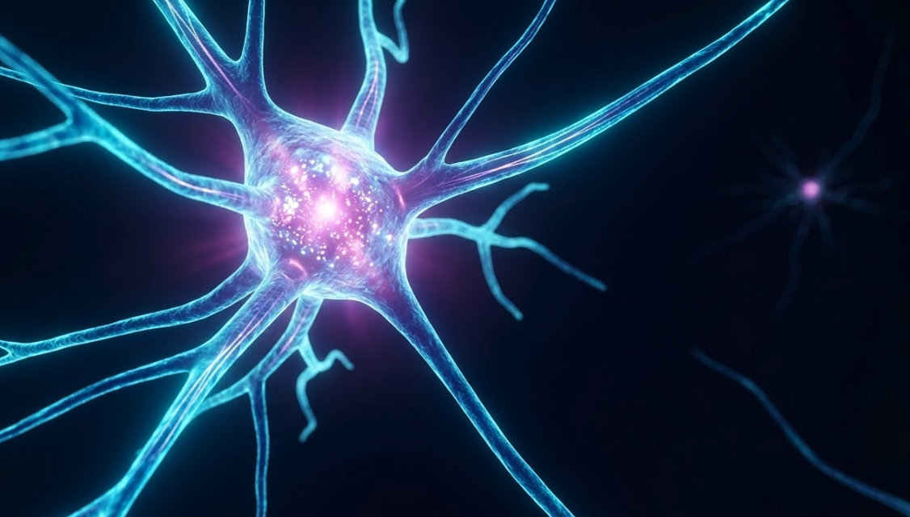

Fundamentos de Deep Learning
Descubre cómo funcionan las redes neuronales...
¿Qué aprenderás?
Aprenderás los fundamentos de las redes neuronales.
Entenderás los conceptos clave del Deep Learning y sus aplicaciones.
Dominarás la matemática de una neurona artificial.
Explorarás cómo fluye la información en una red (forward propagation).
Comprenderás cómo aprenden las redes con backpropagation y optimización.
Implementarás redes neuronales con Keras y PyTorch.
Contenido del Curso
Módulo 1: Fundamentos Conceptuales de Deep Learning
En este módulo se presentarán los conceptos básicos del Deep Learning, incluyendo qué son las redes neuronales, sus aplicaciones, diferencias entre neuronas naturales y artificiales, y una introducción a los modelos como la regresión logística.
Módulo 2: Modelado Matemático de Neuronas Artificiales
Se explorará el funcionamiento interno de las neuronas artificiales desde una perspectiva matemática, abarcando funciones de activación como la sigmoidal, su implementación práctica, y cómo se construyen redes feedforward.
Módulo 3: Propagación hacia Adelante (Forward Propagation)
Este módulo se enfocará en cómo fluye la información a través de una red neuronal, cubriendo la propagación hacia adelante, las expresiones matemáticas involucradas, y el entrenamiento básico de una red.
Módulo 4: Propagación hacia Atrás (Backward Propagation)
Se explicará cómo las redes neuronales aprenden mediante la retropropagación del error, abordando funciones de pérdida, descenso del gradiente y otros métodos de optimización para ajustar los pesos de la red.
Módulo 5: Implementación de Redes Neuronales en Keras y PyTorch
En este módulo final se aplicará lo aprendido para implementar redes neuronales reales utilizando las librerías Keras y PyTorch, incluyendo exploración de arquitecturas alternativas y un cierre del curso.
Descripción
Explora el poder del Deep Learning con este curso diseñado para llevarte desde los conceptos fundamentales hasta la implementación de redes neuronales con Keras y PyTorch. A lo largo del curso comprenderás cómo funcionan las redes neuronales desde cero, dominarás los principios matemáticos que las sustentan, y aprenderás a entrenarlas eficazmente utilizando técnicas modernas de propagación hacia adelante y hacia atrás. Este curso es ideal para quienes buscan iniciarse en el mundo de Deep Learning o fortalecer su base técnica con un enfoque claro, práctico y orientado a resultados reales.
Conoce al profesor
Oscar Contrerass
Realizó su licenciatura en Ingeniería de Sistemas y posteriormente obtuvo una Maestría en Informática Avanzada por la Universidad de Brístol (Reino Unido). Cuenta con amplia experiencia en Ingeniería de Software e Ingeniería de Datos.
Cursos relacionados

